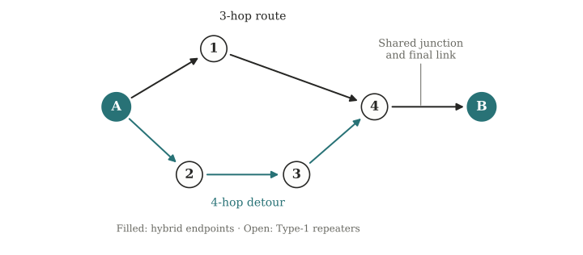
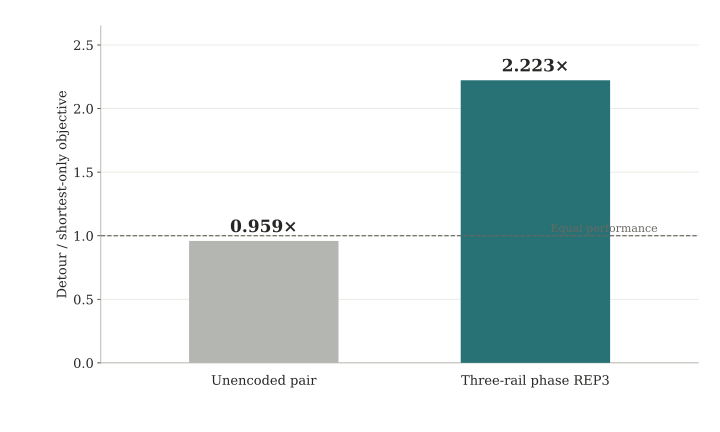

1. The network design question
Hybrid repeaters combine memories suited to fast, multiplexed entanglement generation with memories suited to long storage and accurate local operations. Encoded hybrid repeater chains provide the starting architecture [1]. This project asks how to extend that architecture to two-dimensional networks: where should the more capable hybrid nodes go, which paths should supply them, and which error-correcting codes should they use?
Extra paths create more opportunities to generate entanglement, but they also compete for memory and introduce additional swaps. An encoded block must assemble several physical pairs, so its completion time and accumulated noise depend on how those arrivals fit together. The goal is to optimize placement, routing, memory resources, and code choice jointly.

2. Reducing the network to its hybrid boundaries
The analytical goal is an exact stochastic description of a region of simple Type-1 repeaters as seen by its boundary hybrids. Existing work gives exact waiting-time and noise analyses for repeater chains [2], [3]. Here, branching paths can share physical resources, so their outputs must retain the resulting correlations.
The current construction uses a finite-state boundary kernel: a state records which physical memory ports are occupied, while Pauli-Fourier moments retain the joint phase-error distribution. Boundary actions can consume a completed pair or transfer it into an encoded register. Under the specified model, this preserves the joint law of delivery timing and phase errors without retaining a growing list of arrival histories.
Current theoretical result. For a finite directed acyclic region with one memory slot per link endpoint, local random swap-ASAP, and independent Markovian phase noise, the controlled boundary description has a state dimension independent of the number of elapsed rounds. The construction also includes the correlated phase errors and storage noise of a partially assembled encoded block.
The hidden state still retains physical port configurations. Its size can grow rapidly with network size; independence from the time horizon does not imply efficient computation for arbitrary networks. Controllers that act on individual pair ages require that information to remain in the state.
3. Code choice can reverse the preferred route
An exact calculation on the graph above compares the shortest route with the same route plus the detour. Both designs use the same seven-round deadline and a phase-adjusted delivery objective. The detour slightly reduces the unencoded objective, but increases the objective for a three-rail phase-repetition block by about 2.22 times.

The extra path adds noisy ancestry to individual pairs, but gives the encoded controller more chances to collect all three rails before the deadline. Its value therefore depends on the code's resource requirement. The illustrative objective is
Here T is block completion time, pZcond is the output phase-error probability conditional on completion by the deadline, and h2 is binary entropy. The example uses link-success probability 0.5, swap-success probability 0.9, Type-1 and Type-2 one-round phase characters 0.99, and swap phase character 0.9. Trials reset immediately at completion or the deadline. The encoded decoder is ideal phase-majority correction; the calculation omits bit-flip errors, full syndrome-extraction faults, classical latency, and hardware cost. The ratio compares routing choices within a code, rather than encoded and unencoded throughput.
4. Current scope and next steps
The exact result currently covers branching directed regions between two boundary hybrids and a simplified phase-only encoded controller. The broader two-dimensional study includes reconvergence at hybrid checkpoints, local swapping, routing, and finite-memory effects. The next step is to connect the boundary model to the full encoded-repeater noise model and use it to guide larger-network placement and routing decisions.
References
S. Haldar, S. Guha, D. Towsley, and F. Rozpędek. Scalable entanglement distribution using encoded hybrid repeater chains. Preprint (2026). arXiv:2609.19783.
E. Shchukin, F. Schmidt, and P. van Loock. Waiting time in quantum repeaters with probabilistic entanglement swapping. Physical Review A 100, 032322 (2019). DOI.
K. Goodenough, T. Coopmans, and D. Towsley. On noise in swap ASAP repeater chains: exact analytics, distributions and tight approximations. Quantum 9, 1744 (2025). DOI.